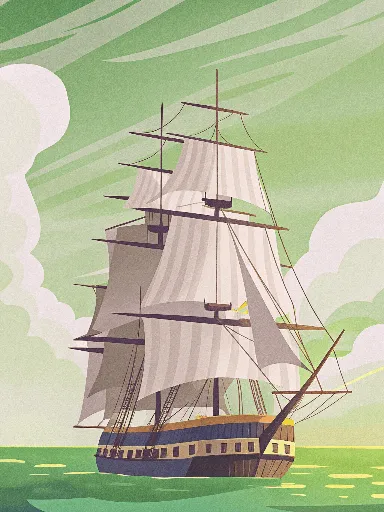
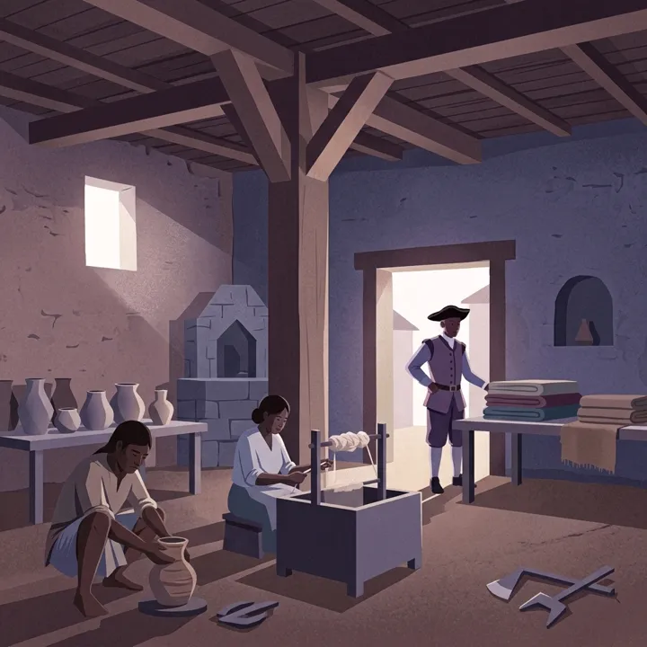
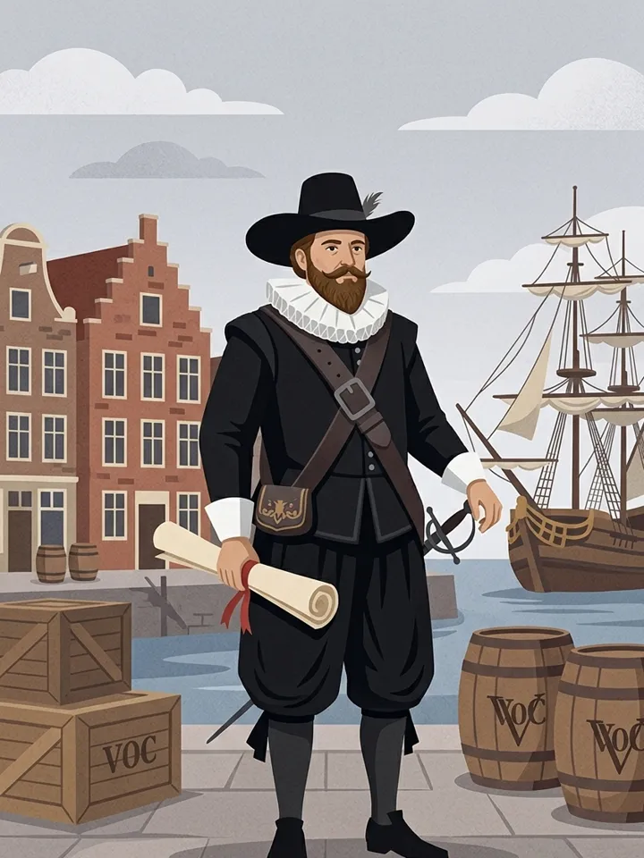
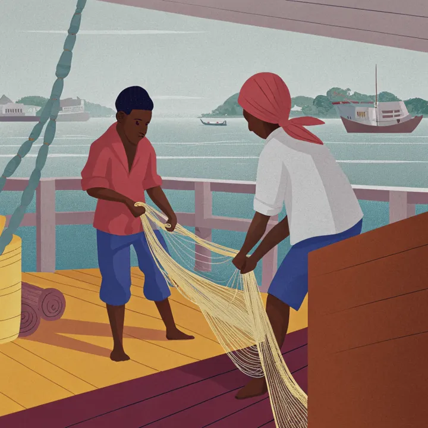

Колонизация
Настольная игра о Новом Свете,
Содержание
Компоненты

Коротко об игре
Вы управляете новыми колониями европейской нации за океаном. Корона ждёт налогов, колонисты — свободы.
За
Игра завершается Войной за независимость. Каждый губернатор — патриот: ему предстоит удержать свои колонии против королевской армии. При
Наберите больше всех победных очков 🏅 и удержите после войны хотя бы одну колонию. Дороже всего колонии, для всех одинаково: очки приносит каждая, которую вы отстояли или захватили на войне. К ним добавляются постройки, Отцы-основатели, золото, агенты и непотраченные колокола; только лоялист не получает очков за колокола.
Агенты — это ваши действия
Всё, что вы делаете, вы делаете, разыгрывая с руки карту агента: одна карта — одно действие. Любой агент может выполнить любое обычное действие, а у большинства есть свойство, улучшающее одно из них. Рыбак ловит больше рыбы, матрос плывёт дальше, солдат сильнее в бою. Те же агенты сражаются за вас в битвах и на войне.
Ваши агенты — это ваша собственная колода. В начале у вас
Две фишки на карте
У вас один корабль ⛵ и одна пешка ♟️. Корабль плавает по океану. Его трюм напечатан на планшете нации:
Ресурсы
Пять видов ресурсов, это кубики:
Ресурсы хранятся на одном складе, общем для всех ваших колоний, и продаются в Европе за золото. Сырьё 🌿 — это и плантационные культуры, и меха: один ресурс и один значок, где бы его ни добывали.
Ещё три вещи отмечаются жетонами:
- Золото 🟡 — найм агентов и налоги.
- Колокола 🔔 — стремление колонистов к свободе. За них привлекают Отцов-основателей и созывают ополчение на войне, а в конце они приносят очки.
- Кресты ✝️ — вербовка агентов и обращение индейцев. Их может быть не больше
.
Красные кубики 🟥 — это красные мундиры, солдаты Короля; все вместе они — королевская армия. Всю игру они собираются в казармах на планшете Европы, а на войне выступают против патриотов.
Игра в одиночку и вдвоём
Игра одного или двух игроков идёт как обычная, но без лоялиста: армия Короля атакует все колонии. Отказ от налога добавляет

Подготовка
Как разложить всё для первого тура.
Карта. Перемешайте фрагментов карты рубашкой вверх. Выложите из них квадратом на , рубашкой вверх, все стрелками в одну сторону. Вокруг квадрата идёт кольцо открытого моря, а вокруг него — кольцо клеток Европы. - Европа. Положите планшет Европы. Поставьте маркер тура на
, маркер налога — на первое деление, а по кубику каждого ресурса — на его начальную цену. - Колода агентов. Перемешайте общих агентов в одну колоду. Выкладывайте агентов на причал, пока там не окажется
разных: повторный агент ложится на свою стопку, и вы выкладываете дальше. - Индейцы. Сложите
агентов-индейцев в отдельную стопку. Перемешайте карты племён. - Салон. Перемешайте Отцов-основателей и откройте
из них. - Постройки. Разложите карты построек стопками: по
каждой базовой постройки и по одной каждого улучшения. - Колоды. Перемешайте события, руины, кораблекрушения и тактики Короля в четыре колоды рубашкой вверх.
- Игроки. Каждый выбирает нацию; у каждого цвета две нации, и у двух игроков не может быть одного цвета. Каждый берёт планшет своей нации, корабль, пешку, маркеры колоний и стартовых агентов и замешивает агентов в свою колоду. Золота, колоколов, крестов и ресурсов в начале нет. Новичкам подойдёт нация с одной ★. Первый игрок определяется случайно и получает маркер первого игрока. По очереди все ставят корабль на свободную клетку Европы, с пешкой на борту: в трюме на планшете нации.

Тур
Доберите карты и действуйте по очереди, пока все не спасуют. Затем — событие и налог.
1. Добор
Каждый игрок добирает агентов из своей колоды, пока на руке не станет
2. Действия
Начиная с первого игрока и по часовой стрелке, каждый в свой ход разыгрывает одного агента и выполняет им одно действие. Затем агент уходит в сброс владельца. Бесплатных действий нет: всё, что вы делаете, стоит карты.
Ходы идут по кругу, пока все не спасуют. Спасовав, вы заканчиваете тур: оставьте на руке любые карты на следующий тур, остальные сбросьте. Игрок без карт обязан спасовать.
Любой агент может выполнить любое обычное действие и добавляет своё свойство там, где оно подходит, кроме действий, которым нужен определённый агент: для атаки нужен агент с 🗡️, для союза — с 🎓, для работы в постройке — достаточное образование. Преступник и раб могут только добывать или переобучаться в школе. В бою они всё равно дают 1 как поддержка, и их можно сбросить в уплату за карту или при обмене.
Рука, колода и сброс вместе — это ваш пул агентов. Некоторые карты заставляют убирать агентов; убирать перестают, когда их остаётся
На складе никогда не бывает больше
3. Событие
Когда все спасовали, первый игрок открывает верхнюю карту событий, читает её вслух и выполняет сверху вниз (см. «Случай и история»).
4. Налог
Начиная с тура
В 4-м туре налог
5. Конец тура
Если у кого-то

Движение и исследование
Плывите вдоль берега, идите вглубь суши и открывайте неизвестную карту фрагмент за фрагментом.
Движение
Двигайте свой корабль и свою пешку, потратив на них до
- Корабль остаётся на воде, пешка — на суше, если не на борту.
- На клетке может стоять только одна фишка, кроме вашей пешки на борту вашего корабля.
- Пешка может войти в свою колонию. Ни одна фишка не может войти в поселение или чужую колонию.
Исследование
За
Погрузка и разгрузка
Когда ваш корабль стоит на воде рядом с вашей колонией, перенос ресурсов между трюмом и складом стоит
Высадка и посадка
Чтобы высадиться или сесть на корабль, пешка просто переходит на нужную клетку и платит её стоимость, как при любом движении: клетку суши при высадке, клетку корабля при посадке.
Корабль Клары с пешкой на борту плывёт 2 клетки вдоль берега: 2 💨. Она тратит 1 💨, чтобы высадить пешку на клетку луга (луг стоит 1), 1 💨, чтобы пройти ещё одну клетку луга вглубь, а последнее очко — чтобы проплыть кораблём дальше.
Руины и кораблекрушения
Когда ваша пешка входит на руины или корабль на кораблекрушение, уберите чёрный кубик и сразу выполните верхнюю карту этой колоды. Если карта заканчивает ход, оставшиеся очки пропадают для обеих фишек.
Возвращение
- Корабль, отправленный в Европу, встаёт на ближайшую свободную клетку Европы вместе с пешкой и, если карта не говорит иного, с грузом. Корабль, получивший повреждение по любой причине, отправляется в Европу или, если у вас есть «Верфь», к одной из ваших колоний, сразу полностью починенным. Повреждённый корабль не может двигаться и атаковать, пока его не починят.
- Пешка, отправленная назад, возвращается на свой корабль, где бы он ни был. Груз, который больше не помещается в трюм, пропадает.

Колонии
Основайте до
Основание колонии
Пешка основывает колонию на клетке суши, где стоит: положите туда маркер колонии. Первая колония бесплатна, каждая следующая стоит
- не касаться другой колонии или поселения, включая диагонали;
- касаться хотя бы одной клетки океана, связанной с Европой открытой водой.
Поселение, открытое позже рядом с вашей колонией, размещается как обычно: правило расстояния ограничивает только основание.
Колонии никогда не убираются; отнять их может только война. Склад, постройки и Отцы-основатели принадлежат вам, а не одной колонии, и служат всем вашим колониям.
Добыча
Возьмите 1 ресурс с одной клетки: с клетки самой колонии или с одной из восьми соседних, если она пуста (на ней нет колонии, поселения или фишки). Каждая местность даёт что-то одно; пустыня и тундра не дают ничего. Затем добавьте:
- +1 за значок бонуса на этой клетке, если он показывает этот ресурс;
- +1 за свойство агента, если оно подходит;
- бонусы ваших Отцов-основателей.
Значок бонуса на местности, которая этого ресурса не даёт, всё же позволяет взять его там: 1 за бонус, плюс свойство агента и Отцы. Некоторые агенты, например траппер в лесу, добывают и там, где земля ничего не даёт. Клетки и постройки можно использовать сколько угодно раз за тур.
Работа в постройке
Вместо клетки агент может работать в одной из ваших построек, одной за действие. Его образование должно быть не ниже, чем у постройки. Мастерская превращает 1 🟩 в 1 🟧, ратуша даёт 🔔, часовня ✝️; полный список — в справочнике. Бонусы прибавляются к тому, что постройка производит, а не к тому, что расходует. Одно действие — одна постройка, поэтому улучшение никогда не прибавляется к производству базовой постройки; базовая остаётся доступной агентам без образования для улучшения.
С постройкой «Доки» агент работает на клетке океана рядом с колонией через доки, +1, то есть 2 🟦 — ещё до бонуса клетки и свойства агента.
У Даниила есть «Доки», а его колония касается клетки океана с бонусом рыбы. Он разыгрывает там рыбака: 1 за море, +1 за доки, +1 за бонус и +1 за рыбака — всего 4 🟦.
Строительство
Заплатите стоимость постройки древесиной 🟫 со склада и положите её карту рядом с планшетом нации. У вас может быть до
Снабжение
Потратьте 1 🟦 со склада и возьмите 1 карту взамен разыгранной: так меняют слабую карту.
Обмен
Сбросьте 2 карты, включая разыгранную, и возьмите 1.
Переобучение
Разыграйте в своей школе агента, который вам больше не нужен, чтобы переобучить его. Он покидает ваш пул агентов, а вместо него вы берёте в свой сброс любую профессию 📖 из колоды агентов, общего сброса или с причала — на ваш выбор. Если искали в колоде агентов, перемешайте её. Школа принимает любого агента, даже преступника или раба. Университет принимает агентов с 📖 и выше и переобучает их в любую профессию 🎓.
Переобученный агент уходит как любой убранный: общий — в общий сброс, индеец — обратно в свою стопку, агент из стартовой колоды нации — из игры. Уникальным агентам и индейцам не учат.
У Гуго есть школа и ненужный преступник. Он разыгрывает преступника в школе, берёт солдата из колоды агентов в свой сброс, а преступник уходит в общий сброс.
Таможня продаёт, верфь чинит корабль: см. «Постройки» в справочнике.

Европа
Старый Свет покупает ваши товары, присылает новых людей, а в его салонах рождаются идеи.
Для торговли, найма и ремонта ваш корабль должен стоять на клетке Европы; пропаганду можно вести, где бы ни был корабль. Фишки в Европе атаковать нельзя.
Торговля
Продайте любые ресурсы из трюма по текущим ценам; золото ваше. Каждый проданный кубик ложится на трек спроса этого ресурса, где по одному месту на игрока. Когда трек заполняется, цена падает на 1 (не ниже 0), а на треке остаются только лишние кубики. Одна продажа может заполнить трек несколько раз. Всё, что вы продаёте за одно действие, продаётся по прежней цене.
В игре втроём серебро стоит 5 🟡, на его треке 1 кубик. Ева продаёт 4 ⬜ и получает 20 🟡. Её второй кубик заполняет трек, цена падает до 4, а два последних кубика остаются на треке.
Наём
Купите 1 или
Пропаганда
Привлеките до
Ремонт
Уберите 1 повреждение с корабля. «Верфь» чинит его полностью и вдали от Европы: см. «Постройки».
Вербовка
Для вербовки корабль не нужен: её можно провести откуда угодно. Потратьте кресты ✝️, не меньше номера тура, и посмотрите столько же агентов с верха колоды агентов. Одного из них можете положить в свой сброс, остальные уходят под колоду в любом порядке.
В 3-м туре Фёкла тратит 4 ✝️ и смотрит четырёх верхних агентов: колониста, двух солдат и скаута. Она берёт скаута, а остальных кладёт под колоду.

Бой
Исход боя решают карты обеих сторон и горсть кубиков.
Атака
Ваша фишка атакует фишку, колонию или поселение на соседней клетке. Разыграйте в открытую агента с 🗡️ нужного вида: 🗡️ пешки для боя на суше, 🗡️ корабля для боя кораблей. У капитана есть оба.
- Корабль не может атаковать сушу, кроме как бомбардировкой.
- Пешка, атакующая со своего корабля или атакующая корабль у берега, сражается с
🗡️. - Бомбардировка позволяет кораблю атаковать сушу, а пешке — корабль без этого штрафа. Бомбардирует канонир, а с Михилем де Рюйтером с корабля бомбардирует любой агент с 🗡️.
- Пешку в колонии нельзя атаковать отдельно: атакуйте колонию.
Сила
Оба игрока тайно выбирают любое число карт с руки для боя и открывают их одновременно. Защитник может добавить и верхнюю карту своей колоды, не глядя. Затем каждая сторона считает:
- 1 за каждую карту в бою, включая разыгранную;
- 🗡️ на этих картах для этого вида боя;
- свои прочие бонусы; защитник добавляет ещё и местность своей клетки.
Все карты боя уходят в сброс владельцев.
Кубики
Если атакующий не сильнее, атака не удалась; только атака на поселение всё равно злит племя (см. Индейцы). Иначе атакующий бросает по кубику 🎲 за каждое очко разницы. Каждая
Ева атакует пешку Фёклы в лесу солдатом (1 за карту, +2 🗡️) и добавляет колониста с руки: 4. Фёкла добавляет одну карту, 1, и лес даёт ей +1: 2. Ева бросает 2 кубика и выбрасывает 6 — один успех. Пешка Фёклы возвращается на свой корабль, а Ева получает 1 🔔.
Что делает урон
- Пешка: один успех возвращает её на свой корабль.
- Корабль: каждый успех — 1 повреждение, занимающее место в трюме, до
. Корабль уходит в Европу или, если у владельца есть «Верфь», к его колонии, полностью починенным. Победивший корабль может забрать груз проигравшего в свободные места трюма, а остальное оставить проигравшему или потопить; груз, который больше не помещается в повреждённый трюм, пропадает. Пешка, победившая корабль, ничего не забирает. - Колония: защитник добавляет +
, местность и «Частокол» (+ ) и «Форт» (+ ), которые складываются. Каждый успех забирает 1 ресурс на выбор атакующего на его склад или разрушает одну из самых дешёвых построек. Постройку, на которой стоит улучшение, нельзя разрушить, пока улучшение цело. Затем атакующая пешка переходит к ближайшей колонии владельца или на свой корабль, если колоний нет; бомбардирующий корабль остаётся на месте.

Индейцы
Земля не пуста. Её народы могут стать друзьями, новообращёнными или врагами.
Поселения
Когда вы открываете клетку со значком поселения 🛖, а в игре размещено меньше
Поселения нумеруются в порядке появления, и события ссылаются на эти номера. Все поселения одного племени имеют общую враждебность.
Отношения с поселением
Для этих действий ваша пешка или корабль должны стоять рядом с поселением.
- Подарок: отдайте 1 любой ресурс со склада. Враждебность племени падает на цену этого ресурса в Европе, так что товары успокаивают сильнее еды.
- Проповедь: потратьте ✝️, равные враждебности. Возьмите агента-индейца в свой сброс; враждебность растёт на 1, население уменьшается на 1. Поселение, население которого упало до 0, исчезает без добычи.
- Атака: сила поселения — его население плюс местность; карт оно не добавляет. Победив, вы можете взять агента-индейца, получаете +1 🔔, а население уменьшается на 1, сколько бы урона вы ни нанесли. Забрав последнего, вы получаете добычу племени (золото или ресурсы прямо на склад), и поселение убирается. Любая атака, удачная или нет, поднимает враждебность до
. - Союз: при враждебности
или ниже агент с 🎓 может заключить союз с поселением, у которого союзника ещё нет. Положите свой маркер на его карту. На войне каждый союзник даёт вам карту воина с 🗡️. Союз распадается, если враждебность достигает .
Агентов-индейцев можно получить только в поселениях и только пока не кончилась стопка из
Когда индейцы приходят в движение
События активируют поселения по номерам. Затронут игрок, чья колония ближе всего к этому поселению:
- при враждебности
или ниже индейцы приносят в подарок 🟦; - при
ничего не происходит; - при
и выше они совершают набег на эту колонию.
При набеге владелец колонии сбрасывает

Случай и история
События потрясают весь стол, руины и кораблекрушения награждают смелых, а Отцы-основатели остаются с вами до конца.
События
Каждый тур, после того как все спасовали, выполняется одно событие. В колоде
- Выполняйте карту сверху вниз; игроки действуют по очереди, начиная с первого. Индейцы приходят в движение последними.
- «Игрок, у которого больше всего»: при равенстве — ближайший по часовой стрелке от первого игрока, начиная с него самого. Если ни у кого ничего нет, ничего не происходит.
- Запас — это ваш склад, без трюма.
- Цены остаются в пределах от 0 до
🟡, а изменения цен не трогают треки спроса. - «Может» предлагается каждому игроку по очереди. Выбор, который все игроки делают вместе, делается тайно и одновременно.
- 🟥 «за каждого игрока» считаются по всем игрокам.
- Контрабандисты покупают по текущей рыночной цене, без бонусов агентов.
Руины и кораблекрушения
В колоде руин
- Вариант, который нечем оплатить или условие которого не выполнено, недоступен. Если недоступны все, ничего не происходит.
- «Требуется агент с 🗡️» или «требуется скаут»: агент, разыгранный для этого движения, или агент, которого вы сбрасываете с руки.
- Скаут игнорирует эффекты со значком 💀.
- «Ближайшее поселение» считается в шагах от вашей фишки, включая диагональные; при равенстве выбираете вы. Если поселений на карте нет, эта часть пропускается.
- «Фишка заканчивает ход»: оставшиеся очки пропадают для обеих фишек, и 💨 ниже на карте ничего не дают, но остальное на карте выполняется.
- Добыча в трюм занимает только свободные места; остальное пропадает.
- Потери ✝️ и 🔔 останавливаются на 0, но вариант, который стоит 🔔, требует их наличия.
- Сыгранные карты уходят в сброс и перемешиваются в новую колоду, если колода кончилась.
Отцы-основатели
Отец-основатель, привлечённый пропагандой, остаётся с вами до конца игры. Каждый даёт постоянный бонус, разовый подарок или силу на войне, а в конце приносит 1 🏅. У вас может быть не больше
Отец, добавляющий к ресурсу, — например, Франклин или Уитни, — добавляет к каждому действию добычи этого ресурса, на клетке или в постройке.
Война за независимость
Колонии восстают. Король отвечает всеми солдатами, которых собрал, и один губернатор остаётся с ним.
Когда она начинается
В конце тура, после налога, если у кого-то
Она идёт на ячейках колоний внизу планшетов наций, пронумерованных от 1 до
1. Стороны
Все игроки — патриоты, кроме игры на
2. Армия Короля
- Возьмите одну карту тактики Короля. Она меняет эту войну, как на ней написано.
- Королевская армия — это все 🟥 в казармах, плюс
🟥 за каждое поселение с враждебностью и выше, плюс то, что добавляет тактика. - Разделите красные мундиры поровну между ячейками колоний патриотов. Оставшиеся раздайте по одному колониям патриота, у которого больше всего 🔔 (при равенстве — больше ✝️, затем больше 🟡), начиная с колонии 1, затем колониям следующего патриота и так далее. Например, 7 красных мундиров, у Анны и у Бориса по две колонии, у Анны больше 🔔: каждая колония получает 1, а 3 оставшихся достаются двум колониям Анны и колонии 1 Бориса. Король никогда не атакует лоялиста.
3. Сбор войск
Каждый берёт в руку весь свой пул агентов — руку, колоду и сброс. Затем по очереди и открыто игроки берут военные карты. У военных карт та же рубашка, что у агентов, и они идут в руку; после войны они считаются агентами вашего пула.
- Воины: каждый игрок, и лоялист тоже, берёт по карте воина за каждое союзное ему поселение. Воин сражается с
🗡️. - Ополчение, только патриоты: заплатите 1 🔔, чтобы обменять своего агента без 🗡️ на карту ополчения с 1 🗡️. Отложите агента в сторону: он по-прежнему считается агентом вашего пула.
- Наёмники: любой может заплатить
🟡 за карту наёмника с 1 🗡️.
В коробке
4. Расстановка карт
По очереди положите одну или несколько карт с руки рубашкой вверх на одну ячейку колонии или спасуйте. Спасовав, вы больше не кладёте карт в этой войне. Ходите по кругу, пока не спасуют все; карты, оставшиеся в руке, не сражаются.
- Лоялист атакует любую колонию патриота или охраняет свою.
- Патриот защищает свою колонию или атакует колонию лоялиста. Патриоты никогда не кладут карты на колонии друг друга.
На ячейку противника положите на свою стопку жетон своей нации, чтобы все знали, чья она. Если кладёте туда снова, добавьте карты в ту же стопку. На своих ячейках жетон не нужен.
Все видят, сколько карт лежит на каждой ячейке, но не какие. Класть можно любую карту, даже с 0 🗡️.
5. Осады
Разыграйте ячейки по одной, начиная с колонии 1 лоялиста и далее по часовой стрелке. Откройте лежащие там карты. Здесь карта даёт только свои 🗡️, без 1 за розыгрыш. Колония, на ячейке которой нет кубиков или карт противника, не атакуется.
Колония патриота. Атака:
Колония лоялиста. Атака: карты патриотов. Защита:
Если атака не сильнее, колония устояла. Иначе атакующий бросает по кубику за каждое очко разницы, но не больше
Кому достаётся павшая колония
- Колония патриота: сравните карты лоялиста у неё с королевской армией (
за каждый 🟥, плюс тактика). Если лоялист сильнее, он забирает колонию: замените её маркер своим. Если сильнее Король, колония потеряна: уберите её маркер, очков за неё никто не получает. При равенстве лоялист и игрок слева от него, за Короля, бросают по кубику; побеждает больший, при ничьей бросают снова. - Колония лоялиста: её забирает патриот с наибольшими 🗡️ у неё. Равные патриоты бросают по кубику; побеждает больший, при ничьей бросают снова.
На колонии 2 Григория 9 🟥 и стопка лоялиста из трёх карт: солдат (2), воин (2) и колонист (0) — атака 9 + 4 = 13. Григорий защищается: 1, +1 за лес, +1 за «Частокол», +1 за свой корабль рядом с колонией и своя стопка: драгун (3), ополчение (1), наёмник (1) и земледелец (0) для блефа — всего 9. Лоялист бросает 4 кубика: 1, 3, 4 и 5 — один успех, колония пала. 4 🗡️ лоялиста меньше 9 у Короля, поэтому колония потеряна: очков за неё никто не получает.

Конец игры
Когда закончилась последняя осада, подсчитайте очки.
| Очки за | 🏅 |
|---|---|
| Каждую вашу колонию, включая захваченные на войне | |
| Каждые | |
| Каждые | 1 |
| Каждые | 1 |
| Каждую постройку | |
| Каждого Отца-основателя; |
Победитель
Дроби отбрасываются. Нация без колоний после войны уничтожена и получает 0 очков, что бы у неё ни было. Чтобы победить, нужно удержать хотя бы одну колонию и набрать больше всех очков. При равенстве побеждает тот, у кого больше золота, затем больше агентов; если равенство осталось, победа делится. Если колоний не осталось ни у кого, побеждает Корона.
Советы губернатору
Чему научились опытные игроки. Это советы, а не правила: где они расходятся, решают правила.
Считайте очки
- Каждое действие должно прибавлять к итоговому счёту. Прежде чем сыграть карту, прикиньте, сколько она стоит в 🏅: удержанная колония —
🏅, постройка — 🏅, каждые непотраченных 🔔 и каждые 🟡 — 1 🏅. - Колонии — главный приз: основайте сколько сможете и удержите их на войне. Затем идут колокола, постройки и золото; агенты дают мало.
- Побеждает отрыв от соперников, а не сумма очков.
Планируйте игру
- Выберите путь пораньше. Либо вширь: все колонии рано, пока берег свободен, а потом строиться, чтобы их удержать. Либо вглубь: одна-две сильные колонии и быстрый сбор колоколов, который заканчивает игру, пока королевская армия мала, а соперники не догнали. Решите в первых турах — по карте, своей нации и Отцам в салоне.
- Планируйте тур, а не карту. Прежде чем сыграть первую карту, решите, что сделает каждая на руке, и играйте их в нужном порядке: сначала движение, потом торговля; сначала добыча, потом погрузка.
- Пасуйте, только когда делать больше нечего или чтобы оставить карту на следующий тур.
- Держите запас. Некоторые события требуют 🟦 за каждую колонию или 🟡 за каждого солдата, а маленькая колода не может терять агентов. Держите немного того и другого до середины игры.
- Заложите основу к середине игры. В последних турах большинство карт должно давать колокола, постройки или защиту.
Колонии
- Хорошее место — рядом лес (🟫 для любой постройки), что-то на продажу (луг для 🟩, горы для ⬜), океан для 🟦, и недалеко от Европы: дальняя колония стоит лишних карт на каждый рейс с товаром.
- Основайте первую колонию в 1-м или 2-м туре. Лучше проплыть чуть дальше к хорошему месту, чем осесть на плохом, но не слишком долго. Везите пешку на корабле, высаживайте её в тот же ход, когда приплыли, и держите на руке карту для основания.
- Места кончаются. Поселения и чужие колонии быстро занимают берег. В первых турах исследуйте достаточно, чтобы знать, где встанут следующие колонии, и основывайте каждую, как только можете заплатить. Поздняя колония не обязана быть богатой: простая клетка на берегу приносит столько же очков, если устоит.
- Еда на следующую колонию. Колония стоит
🟦, а простой океан даёт 1 за карту, так что копить долго. Клетка океана с бонусом рыбы рядом с первой колонией, через доки, ускоряет дело; так же помогают рыбак и Отец, удешевляющий колонии. - Исследуйте с целью. Руины и кораблекрушения дают колокола, золото и агентов. Предпочитайте верную выгоду ставке на кубик, особенно в начале.
Агенты и действия
- Нужный агент на нужном действии часто стоит двух. Знайте свойства своей колоды и давайте каждой карте ту работу, которую она делает лучше всего.
- Сначала полная рука. Если у вашей нации меньше
агентов, наём, который доводит их до , — это лишнее действие в каждом туре: он окупается рано. Дальше наём даёт карты лучше, а не больше: нанимайте, только если новое свойство лучше вашей слабейшей карты и успеет окупиться. В большой колоде каждая хорошая карта приходит реже. - Образование открывает постройки. Предпочитайте агентов, которые могут работать в ратуше и лучших постройках. Преступник и раб только добывают; школа может их потом переобучить.
- Мелкие действия копятся медленно. 1 🟦 или 1 🟫 стоит мало, если не нужно прямо сейчас; постройка, колокол-другой или хорошая продажа стоят больше. Целые туры по 1 🟦 проигрывают игры.
Золото и торговля
- Не сидите на 0 🟡. Без золота придётся отказываться от каждого налога, а события, требующие золота, бьют больно. Золото к тому же приносит очки и покупает наёмников на войне.
- Продавайте два вида, понемногу. Каждая продажа сбивает цену, тем быстрее, чем меньше игроков. Следите за треками спроса.
- Оценивайте рейс в очках. Добыча, погрузка, плавание и продажа стоят нескольких карт. Сравните золото и то, что на него можно купить, с тем, что те же карты дали бы в ратуше.
- Продайте всё до войны. Ресурсы на складе и в трюме очков не приносят.
- Считайте место. В трюме
места, за вычетом пешки и урона; склад вмещает , или со «Складом». Проверяйте перед добычей: излишек теряется. - Налог. Ранние налоги — дешёвые колокола: платите. Поздние дороги, а каждый отказ добавляет
🟥 к армии, против которой встанет каждый патриот. Отказывайтесь, когда золото полезнее в другом месте, и помните, что кубики копятся.
Колокола и Отцы-основатели
- Стройте ратушу рано. Каждый тур без неё свободные карты не дают колоколов. «Газета» даёт больше, но она одна: кто построит её первым, тот обычно лидирует в гонке колоколов. Ей нужны «Ратуша»,
🟫 и агент с 🎓, так что планируйте её с самого начала. - Не тратьте колокола без явной выгоды. Непотраченные колокола приносят очки, решают, кто станет лоялистом, и оплачивают ополчение на войне.
- Отец-основатель стоит колоколов и даёт
🏅 и своё действие. Берите его, когда действие приносит больше потраченных колоколов и успеет сработать: исследователь или торговец окупается во 2-м туре, но редко в 9-м. Отец, усиливающий каждую колонию, может сберечь много ополчения, когда колоний несколько. - Посмотрите на салон перед пропагандой: он меняется, когда другие берут Отцов.
Индейцы
- Подарок — дешёвый мир. Подарок снижает враждебность на цену ресурса, а враждебность у племени одна на всех: один ⬜ или 🟧 может успокоить все поселения племени. Мирные племена не совершают набегов, приносят 🟦 при событиях, не добавляют кубиков королевской армии и могут стать союзниками.
- Союзники сражаются за вас. При враждебности
или ниже агент с 🎓 может заключить союз, и каждый союзник присылает на войну воина с 🗡️. - Берегитесь набегов. «Частокол» в любой колонии защищает от набегов все. Пока его нет, держите на складе
ресурса рядом с враждебным племенем, чтобы набег забрал кубики, а не постройку. - Атака поселения освобождает землю и даёт добычу, но поднимает враждебность племени до
: набеги и ещё 🟥 на войне за каждое его поселение, пока оно так враждебно. Атакуйте, только если земля того стоит.
Война
- Оценивайте войну заранее. Кубики королевской армии делятся между всеми колониями патриотов, вашими и чужими. Посчитайте казармы, добавьте то, что принесут отказы от налога и враждебные племена, разделите на число колоний патриотов и сравните с защитой, которую может набрать каждая колония. Армия растёт быстрее всего в конце игры.
- Защита складывается: сама колония, местность, «Частокол», а затем «Форт», ваши корабль и пешка в колонии или рядом, воины союзников, боевые агенты, ополчение и наёмники. Тактика Короля может что-то отнять, например местность: учитывайте это.
- Фишка считается для каждой колонии, которой касается. Один корабль между двумя прибрежными колониями усиливает обе. Перед войной поставьте корабль и пешку туда, где они нужнее; пешка на борту считается только через свой корабль.
- Бойцам не нужно ждать. На войну весь пул агентов возвращается в руку, так что до неё используйте солдат на другой работе. Потерять можно лишь самого агента — от событий.
- Ополчение стоит колоколов, а колокола — это очки. В ополчение можно обменять только агентов без 🗡️, так что маленькая колода не откупится. Наёмники превращают золото в защиту, по
🟡 за карту: это стоит куда больше их очков, когда колонии не хватает защиты. - Закрывайте разрыв точно. Добавляйте силу только туда, где она превращает падение в оборону. Равный бой — колония стоит, а против колонии, которой не хватает одного очка, бросают один кубик: она устоит, если он не даст успеха. Если всё не удержать, вложите всё в то, что удержите: две удержанные колонии лучше трёх потерянных.
- Блефуйте. Карты кладутся на ячейки рубашкой вверх и дают только свои 🗡️, так что карта без силы может сделать колонию на вид сильной.
Когда начать войну
- Война начинается в конце тура, в котором кто-то набрал
🔔, или после тура . Считайте колокола всех игроков каждый тур: события и налог добавляют колокола в конце тура. - Когда вы лидируете, момент выбираете вы. Заканчивайте игру, пока впереди, — до того, как соперники догонят, а армия вырастет, — или остановитесь в колоколе-двух от предела на тур, чтобы достроить постройки и защиту: оставьте запас в два, ведь колокола от событий могут закончить игру за вас.
- Прежде чем достичь предела, посчитайте войну, которую начинаете. Если колония падёт, ранний конец закрепит потерю: сначала укрепите её.
- Когда отстаёте, тяните игру и выигрывайте в другом: все колонии, все постройки, на какие хватит, союзники и защита, чтобы ничего не пало.
Патриот или лоялист
- При
и более игроках губернатор с наименьшим числом колоколов воюет за Короля. Как и все, лоялист получает очки за каждую колонию, которую удержал или захватил на войне, но не за колокола. - Если вы сильно отстали по колоколам, игра на лоялиста может окупиться: берегите бойцов и золото к войне и цельтесь туда, где у Короля мало кубиков, ведь павшую колонию вы забираете, только если ваши карты там сильнее Короля.
- Будучи патриотом, следите за губернатором с наименьшим числом колоколов: его карты встанут вместе с Королём против вас, скорее всего у вашей слабейшей колонии.
- При меньшем числе игроков лоялиста нет: каждый колокол просто идёт в счёт, а война проверяет каждого патриота против королевской армии.
- Одна колония всю игру: не нашлось места для второй, или первая слишком далеко от Европы.
- Много нанятых агентов прежде основания колоний.
- Ничего не продано, так что золота нет и каждый налог отвергнут.
- Колокола потрачены на поздних Отцов или на ополчение для колоний, которые и так устоят.
- Набег разрушил ратушу, потому что не было частокола.
- Конец игры с колонией, которая падёт.

Нации
От самой простой, с одной ★, до самой сложной. У каждой своя небольшая стартовая колода, в которой есть её уникальный агент.
Агенты
Цена, число карт, образование и свойство. Свойство добавляется к действию, которое оно называет; во всём остальном агент такой же, как все.
Общие агенты
Уникальные агенты
По одному в стартовой колоде каждой нации. Их нельзя нанять, завербовать или обучить.
Агенты-индейцы
Их получают в поселениях проповедью или в бою.

Постройки
Стоимость в древесине и образование, нужное работнику. Улучшения, выделенные фоном, требуют свою базовую постройку; каждое существует в одном экземпляре.

Отцы-основатели
Их цена в колоколах, от самых дешёвых. Каждый к тому же приносит 1 🏅 в конце игры.

События
По одному в тур, выполняются сверху вниз.
Руины и кораблекрушения
Что ждёт в джунглях и под волнами.
Руины
Кораблекрушения

Племена и тактики
Народы этой земли и планы Короля на войну.
Племена
Каждое племя живёт на одной местности. Население, начальная враждебность и добыча, которую даёт его последнее поселение.
Тактики Короля
Одна берётся в начале войны.
Словарь
- Агент
- Карта в вашей колоде: один человек, которого разыгрывают на одно действие.
- Бомбардировка
- Атака корабля на сушу или пешки на корабль без штрафа за высадку.
- Воин
- Военная карта с
🗡️, по одной за каждое союзное вам поселение. - Враждебность 💢
- Насколько племя зло на колонистов, от 0 до
. - Европа
- Внешнее кольцо клеток. Здесь торгуют, нанимают и чинят корабли.
- Казармы
- Место на планшете Европы, где собирается королевская армия 🟥.
- Колокола 🔔
- Свобода. За них привлекают Отцов-основателей и созывают ополчение; они определяют лоялиста, начинают войну при
и приносят очки патриотам. - Колония
- Ваш город на карте, основанный пешкой. Их может быть
. - Королевская армия
- Все красные мундиры 🟥 в казармах. Растёт с каждым отказом от налога и после некоторых событий.
- Красный мундир 🟥
- Солдат Короля: красный кубик. Каждый красный мундир атакует с
🗡️. - Кресты ✝️
- Вера. За них вербуют агентов и обращают индейцев. Не больше
. - Лоялист
- Игрок, вставший на войне на сторону Короля.
- На борту
- Ваша пешка в трюме на планшете нации, а не на карте: она плывёт вместе с кораблём.
- Образование
- Нет 👒, базовое 📖 или высшее 🎓. Работник постройки должен быть образован не хуже, чем она требует.
- Общий сброс
- Общие агенты, ушедшие с причала или от игроков. Перемешивается в новую колоду агентов, когда та кончается.
- Ополчение, наёмники
- Военные карты с 1 🗡️. Патриот получает ополчение за 🔔, обменивая агента без 🗡️; наёмников любой покупает за 🟡.
- Патриот
- Игрок, сражающийся за независимость.
- Пул агентов
- Все ваши агенты: рука, колода и сброс вместе.
- Повреждение
- Урон кораблю; занимает одно место в трюме. Повреждённый корабль не может двигаться и атаковать.
- Поселение 🛖
- Деревня индейцев. На карте племени указаны население 👥 и враждебность 💢.
- Причал
- Ряд агентов для найма в Европе. Не путать с постройкой «Доки».
- Салон
- Ряд Отцов-основателей в Европе.
- Склад
- Место хранения ресурсов, общее для всех ваших колоний:
мест, с постройкой «Склад». - Союз
- Договор со спокойным поселением. На войне каждый союзник даёт вам карту воина.
- Трек спроса
- По одному на ресурс, по месту на игрока. Когда он заполняется, цена падает.
- Трюм
места вашего корабля: ресурсы, пешка и повреждения. - Улучшение
- Постройка, которой нужна базовая; базовая остаётся. Каждое — в одном экземпляре на игру.
- Фрагмент
- Участок карты 3 × 3 клетки, открываемый исследованием.
- Ячейка колонии
- Место внизу планшета нации, по одному на каждый маркер колонии. На войне красные мундиры и карты, отправленные к этой колонии, кладутся туда.
Памятка
Тур
- Доберите до
. - По очереди: один агент — одно действие, или пас.
- Выполните событие.
- Налог: заплатите и получите
🔔 или откажитесь и добавьте 🟥. 🔔 или тур — война. Иначе следующий тур.
Пределы
- Колоний
, построек , Отцов - Склад
или ; трюм - Крестов
; колокола без предела - Цены от 0 до
🟡
Бой
1 за карту, плюс 🗡️, плюс бонусы. Бросьте по кубику за каждое очко разницы; каждая
Действия
| Движение | |
| Колония | первая бесплатно, затем |
| Добыча | 1 и бонусы, или работа в постройке |
| Строительство | заплатите 🟫 |
| Снабжение | 1 🟦: возьмите 1 карту |
| Обмен | сбросьте 2: возьмите 1 |
| Переобучение | в школе: агент становится любым 📖 (🎓 в университете) |
| Атака | агент с 🗡️ |
| Вербовка | ✝️ не меньше номера тура: посмотрите, оставьте 1 |
| Подарок, проповедь, союз | рядом с поселением |
| В Европе | торговля; наём |
| Пропаганда | где угодно: до |